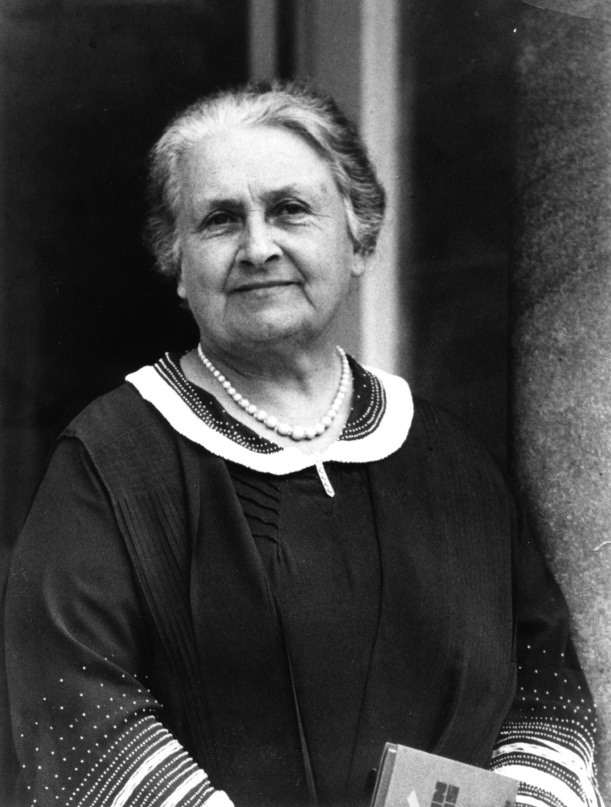

A portrait of Dr Montessori taken in 1936 in an undisclosed location.
Here's a brief timeline of Dr. Montessori's life
1870 - Dr. Montessori was born on August 31, 1870 in Chiaravalle, Italy.
1873 - The Montessori family moved to Florence in 1873 and then to Rome in 1875 because of her father's
work.
1883 - at the age of 13, Dr. Montessori entered a secondary, technical school, Regia Scuola Tecnica
Michelangelo Buonarroti. She initially intended to pursue the study of engineering upon graduation, an
unusual
aspiration for a woman in her time
and place. However, by the time she graduated in 1890 at the age of 20, with a certificate in
physics–mathematics, she
had decided to study medicine instead, an even more unlikely pursuit given cultural norms at the time.
1896 - Dr. Montessori worked with and researched so-called "phrenasthenic" children—in modern
terms, children experiencing some form of mental retardation, illness, or disability.
1901 - Dr. Montessori left the Orthophrenic School and her private practice, and in 1902 she enrolled in
the
philosophy degree course at the University of Rome.
1906 - Started the Case dei bambini in San Lorenzo, Rome.
1909 - International recognition and growth of Montessori education
1915 - Dr. Montessori returned to Europe and took up residence in Barcelona, Spain. Over the next 20 years
she traveled and lectured widely in Europe and gave numerous teacher training courses. Montessori
education experienced significant growth in Spain, the Netherlands, the United Kingdom, and Italy.